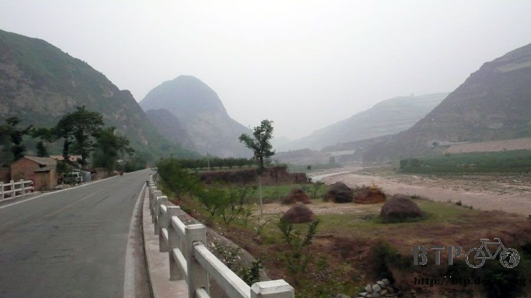
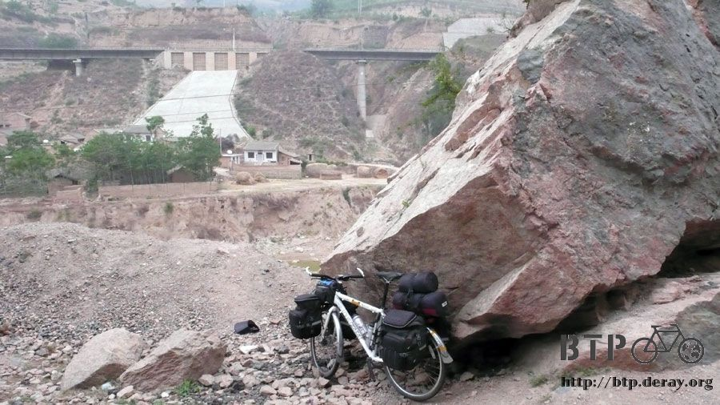
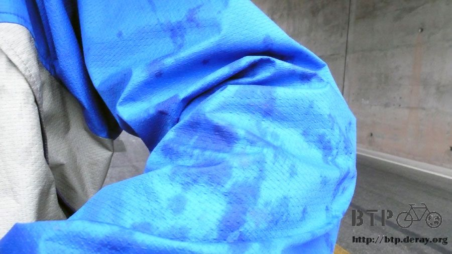
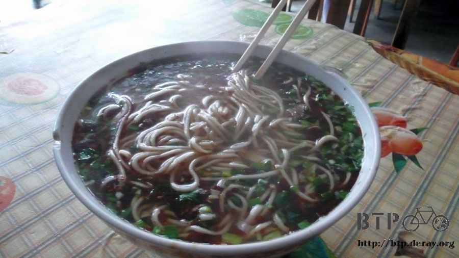
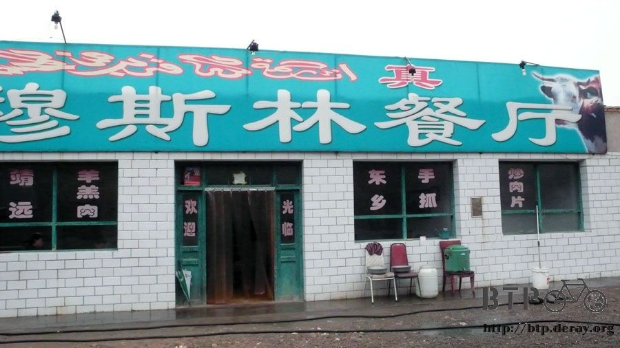
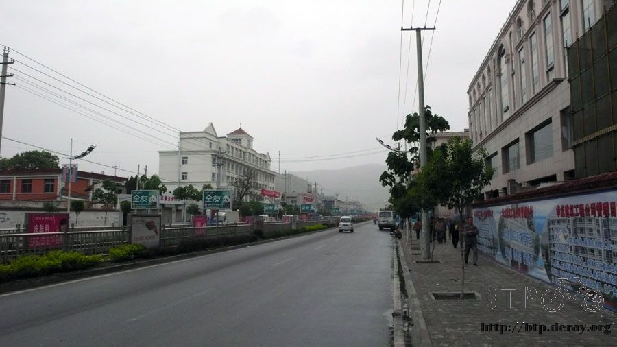
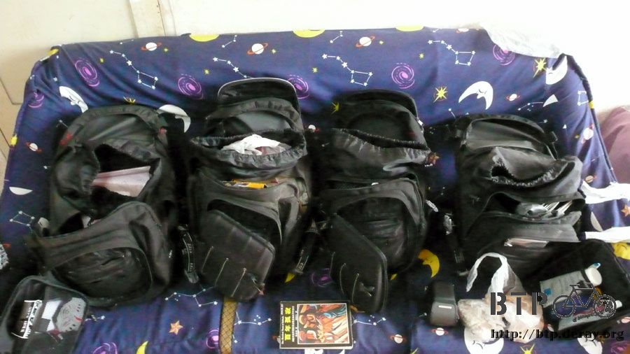

Icy Rain
4 o'clock in the morning, I got up to pee outside. Man, it was freezing!
It was really cold even in the dawn, Shivering, I finished peeing, and ran back to the bed.
I couldn't sleep much last night because of the noise from people drinking and shouting until almost midnight.
Plus there was another person joining me in this room out of nowhere, snoring like thunder.
I woke up at 6 o'clock again in the morning, so did that snoring guy.
It turned out he drank with a bunch of his friends, and the son of that restaurant owner—also the chef,
total 9 people, finished seven "kun"s of beers.
What is KUN again? Never heard of, all I know was six packs.
They told me each "kun" is 9 beers; they must be crazy to finish 63 beers in one night.
After 6:30, I was ready to leave, but the restaurant was still closed, how was I supposed to fill up water and get my deposit back?
I went to the back of the restaurant, second floor, woke up the son of the owner to let him know I was leaving.
After getting the water, I bought 2 RMB's worth of buns for breakfast, and started my trip. It was already 7 o'clock, but it still looked like only 5.
No sun, foggy, and cool, maybe 18 deg C?
I was actually very glad to see this: cooler, no sun, great for biking.

Because of the unbearable stinky smell, I couldn't "take a dump" at the restroom, then ….
Only one hour or so later, I really needed to go, but WHERE?
I parked Dido next to the sign "Falling Rock", which was just by a rock.
Then I went to the back of it, taking my time while looking at those mountains.

On the way, I saw a dog walking back-and-forth on the roadside, my instinct told me it was not a good sign.
I took out my CS gas, just in case. Exactly like I expected, as soon as I rode pass that dog, it ran after me immediately closely but quietly.
I guess this was what Chinese said" only the quite dog bites".
I aimed the gas to that dog a couple of times, but it was still running right after me.
I was ready to give it some kicks when it was running close enough, then it slowed down.
I wondered it was because that dog was too tired or my CS gas finally worked.
Three hours later, I had my first rain in my trip.
The rain came so quickly that I didn't get to find a place to hide, surely I was wet right away.
However, it was cloudy and no sign of heavy rain, so I was struggling if I should put on my rain gear,
and if I should wrap up my backpacks with waterproof covers.

Within 5 minutes, the rain stopped, I was very happy and proud that I didn't stop for the rain earlier.
According to my map, I was supposed to leave the mountainous area after like 50 km.
Already riding for 70 km later, and I was still here, how strange!
I had the Lanzhuo beef noodle soup at Boyang.
The noodle was thin, the soup was great, but the beef was tiny.
It reminded me of the 15 NTD instant beef noodle with only 2-3 pieces of dried beef bits in Taiwan.
I should not complain the size of the beef since it cost only 3 RMB. But,
I was really not talking about the SIZE of the beef, I was asking "WHERE" was the beef.
I didn't stay for too long, because I didn't want to catch the rain again.
I got on my bike soon after lunch, and it was already too late.

I was still debating if I should put on my rain gear this time, maybe it would stop 5 minutes later just like the last time.
I was completely wrong.
It rained harder and harder, I was like a frog in a heating pot.
I didn't want to put on rain coat at the beginning because I was lazy. But now, I was so pissed that I didn't want to put it on.
I wanted to see how bad it can be anyway since I was already soaking wet.
Well, I biked in the pouring rain for over an hour. I was cold and wet; even my glasses were dripping water.
I finally saw a Muslim restaurant, I stopped to have some hot soup, also let my Dido rest a bit.

Took off my head wrap, I was so sure that I would catch cold if I continue biking like this.
I wringed the water out of my coat, shirt, socks and shoes.
Then I had some hot tea, some cumin lamb chop and hot-and-sour pork soup.
I knew I just had lunch, but I was so hungry after biking in the rain.
I wanted to eat something hot to squeeze the "coldness" out of my body.
The rain was much lighter after I swept all the food on the plate and ready to go.
But it was windy, and I was still shivering.
I gave up being stubborn, put on my expensive rain coat.
Wow! This is why this thing was so expensive. My body felt warm immediately.
This coat kept cold air from coming in and slowly venting the humidity out.
Don't think the rain was so pure and clean, the mud-like mark on my glasses was the evidence.
I had to change to another pair of glasses and continued biking.
Even though the wind blew gently, my clothes also began to dry slowly, it was still pretty cold.
I started to worry about those backpacks on my bike. I didn't put on anything waterproof on them, I hoped they were alright.
While I was riding uphill earlier, there were five kids trying to drag my attention.
I was so tired and it was raining, I didn't have any energy to deal with them.
They thought I was not Chinese since I didn't respond to them at all, they started to scorn me in Japanese.
What a bunch of terrible kids.
By the time I finished the steep uphill and downhill biking, I finally entered the city area.
I thought it was Tianshui, my destination today, so I was ready to take a rest.
It was only 80 km or so, I felt more tiresome than finishing a 200-km biking trip.

After checking into a hotel and paying for 15 RMB a night, I changed into dry clothes and opened all my backpacks to let dry.
I was totally satisfied with these bags; they were really water-proof.

Finally I checked the GPS tracker and found I was only at Beidao,
not Tianshui, which was only 20 km away, I stopped too early.
I wrapped myself in the blanket and felt my body finally started to warm up.
I was very sleepy at this moment, but there is no way I should sleep so early. It was only 3:00 in the afternoon.
So I spent my time at the internet café. I was a veteran of such place now.
The only problem was, computers in these places offered all types of Chinese input methods EXCEPT phonetic, which is the only method I know.
If the computer was not that strictly monitored, I would install the phonetic program to type Chinese;
otherwise, I had to use my very limited English to surf online.
I was so glad to see other B2P members were having a good time,
some were even in the middle of the desert, I was so jealous of them.
I probably can be one of them a week from now?
I had such a big lunch that I can still taste the cumin lamb chop.
Not much of appetite for dinner, I had some five-spice peanuts and fruit-flavored milk instead.
When I was ready to read a bit and go to sleep, the hotel staff just opened the door and brought a guy with a beard to share the room with me.
The only catch of staying in such a cheap two-bed room was, you might have to SHARE with anybody the hotel brings to you.
Thank god he looked like a nice guy, but I still reorganized my stuff all around me. Hey, you never know.
This guy was a truck driver, who was originally from Chongqing.
After chatting with him, I found that driving a truck is an interesting job.
He transports goods from point A to point B, then he would look for next delivery at B.
It seems like there are some places that most truck drivers can get business from.
This guy will take anything he can get his hands on, and moves to C, and the same cycle continues.
To a certain extend, this is a life of driving while traveling, you don't know where you will end up tomorrow,
kind of sad and cool at the same time.
Since this guy was a truck driver, I asked for his opinions about planning my route to Lanzhou tomorrow.
The conclusion was, no matter which way I choose: Rt 316 south or local at north,
I have to go around many mountains; there was no easy route for biking.
If I can't get on highway, I was definitely having sore legs after tomorrow.
Staring at my map, I really can't decide what to do tomorrow.
Rt 316 south, was a national highway, so it should be easier for me.
There would be food and lodge available everywhere.
However, the national highway was full of trucks, they honked me all the time,
whih was really annoying. Plus it was a bit detour for me, longer distance to Lanzhou.
On the other hand, the local road at the north was not even on my map (or my map sucks?), it looked a shorter distance to Lanzhou.
But I had to worry about getting lost, and maybe the road condition was very bad, which might make my life much more difficult.
Both routes have its pros and cons. The national highway is a safe bet, surely I can arrive my destination eventually.
But my experience so far told me that local roads had better scenic views, even I was so lost at that time,
I still liked that better than biking on the boring national highways, which almost made me fall asleep while I was on it.
To go for national highway or not, this is the question, and thinking of it made me so sleepy….
I made sure everything was secured around me before I went to sleep.
Even though that truck driver looked like a nice guy, but like I said, you never know.
Let me go to sleep earlier today to recharge my energy. Sleeping is great! Snoozing is fun!